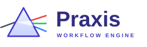

Praxis logo concepts
Each card shows the horizontal lockup, then the icon at 64, 32 and 16 pixels.
01. Deliverable Gate A classical gateway with a gold deliverable passing between the pillars. Work moves only when the gate opens.
02. State Machine Three states in a closed cycle, one of them active. Praxis runs on deterministic transitions.
03. Stage Pipeline Four chevrons darkening left to right: Spec, Design, Code, Verify.
04. Classical Monogram A serifed P in a double gold ring. Praxis is the Greek word for action put into practice.
05. Machina Gear A factory gear with a run button at its hub: the machine that executes the work.
06. Human Hold The amber HOLD state: a pause inside a hexagon, where a person ratifies before work resumes.
07. Work Order A perforated ticket with a check: every job in Praxis starts as a formal work order.
08. Fork and Join A graph that splits into parallel branches and joins at one highlighted result.
09. Worker Hive Six worker cells around one coordinating core: agents dispatched by a single engine.
10. Continuum A gradient infinity loop for long-running, resumable workflows.
11. Flywheel Three interlocking chevron segments turning one way: momentum from repeatable process.
12. Circuit Trace A P routed as a gold trace on a circuit board, with pads at each terminal.
13. Laurel A serif P inside laurel branches. Classical, ceremonial, a mark of work well done.
14. Draftsman A drafting compass scribing an arc: the architecture stage, where contracts are drawn first.
15. Blueprint A P drawn on a blueprint grid with its construction circle still visible.
16. Ratified Seal A stamped seal with the engine's full name around a check: approved, signed off, released.
17. Folded P A P folded from six faceted planes, with a triangular counter.
18. Single Path One unbroken line spirals into a P and ends on a red point: one deterministic path to done.
19. Keystone An arch held by a gold keystone. Invariants are the stone that keeps the structure standing.
20. Console A terminal prompt and cursor. Praxis is scriptable from the command line.
21. Milestones Rising steps with a flag on the last: milestones reached in order.
22. Constellation Stars joined into a P across a night sky, one of them gold.
23. Bauhaus A P built from primary shapes: bar, half disc, dot and triangle.

24. Prism One beam of intent enters, separate deliverables leave: a single spec fanned into parallel work.
25. Assembly Line Finished parts on a conveyor with the next one still dashed: a software factory in motion.
26. Px Lettermark An app-icon style P and x in a violet rounded square, for favicons and launchers.